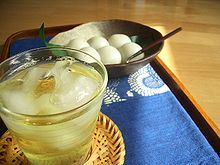
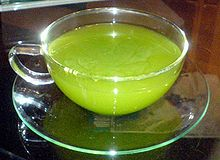
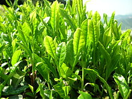
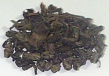
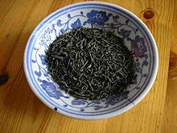

Zelený čaj
Nápoj zvaný zelený čaj je „pravý“ čaj, který při svém zpracování prošel minimální oxidací. Zelený čaj je populární v Číně, Tchajwanu, Hong Kongu, Japonsku, Koreji a na Středním Východě. Relativně nedávno se také více rozšířil na Západě, kde je tradičněji konzumován čaj černý.
Příprava
Každý listový čaj lze připravit více různými způsoby. Všeobecným pravidlem u zelených čajů je zalévání vodou, která prošla varem, ale zchladla na 60-80 °C. Příliš teplá voda způsobí vyluhování tříslovin a dalších substancí a nálev má hořkou chuť až pachuť. Čaj zalitý příliš chladnou vodou má mdlou až vodovou chuť, protože se vonné a chuťové složky uvolnily z listů jen málo.
Kvalitní listové zelené čaje lze zalévat vícekrát. Pro další nálevy lze zvýšit teplotu vody nebo prodloužit dobu louhování.
Doba louhování pro první nálev může u zelených čajů být od 30 sekund do několika minut. Opět záleží na konkrétním čaji. Při kratších dobách louhování se běžně používá větší množství čaje, než u louhování delšího.
Množství čaje pro přípravu se v Evropě odměřovalo na malé lžičky, což vedlo k zažití pojmu „čajová lžička“. U kvalitních sypaných čajů s různou sypnou hmotností, velikostí listu však tento způsob není příliš spolehlivý. Vhodnější je proto odvážení čaje. Pro přípravu 1,5 dl nálevu se používají 2–4 g čaje. Nelze stanovit „správný“ způsob přípravy čaje. Každá sklizeň i stejného druhu čaje je vždycky odlišná a prožitek spojený s čajováním spočívá také v experimentu a odhalování kvalit čaje, který se připravuje.
S přípravou zeleného čaje se ve východních kulturách spojuje také řada obřadů a ceremonií.
Zelený čaj a zdraví
Historie
Archeologické nálezy ukazují, že čaj se pije už téměř 5 000 let, a že Indie a Čína byly první dvě krajiny, kde se začal pěstovat. Podle legendy je objevení čaje připisováno čínskému císaři Šen-nungovi, kterému podle pověsti při ohřívání vody spadly do kotlíku náhodně i lístky čajovníku. Poté, co lahodně vonící nápoj ochutnal, byl překvapen jeho vynikající chutí a energií nápoje, která odstranila únavu. Zelený čaj se používal v tradiční medicíně v Indii, Číně, Japonsku a Thajsku v nejrůznějších případech od zastavování krvácení a zlepšování hojení ran přes snižování horečky, snižování krevního cukru až po zlepšování trávení.
Kniha čaje
Kissa Yojoki, neboli Kniha čaje, sepsaná zenovým mnichem jménem Eisai v roce 1191, popisuje pozitivní účinky pití zeleného čaje na pět životně důležitých orgánů, obzvláště pak na srdce. Kniha se zaobírá léčebnými účinky čaje, včetně léčby kocoviny, jeho role jako stimulantu, léčení oparů a uhrů, tišení žízně, nápravy poruch trávení, léčení onemocnění nervového systému „beriberi“, prevenci únavy a podporu funkcí močové soustavy a mozkové činnosti. První část knihy také popisuje druhy čajovníků, jejich květů a listů a vysvětluje jak čaj pěstovat a jak zpracovávat jeho listy. Část druhá se zaměřuje na dávkování a způsoby podávání čaje u jednotlivých chorob.
Nepodložená tvrzení
Zelenému čaji se připisuje řada zdravotních účinků, z nichž mnohé dosud nebyly vědecky potvrzeny. Tato tvrzení, pro která chybí vědecké důkazy jsou vypsána zde:
- zastavení některých neurodegenerativních onemocnění, jako jsou Alzheimerova nebo Parkinsonova choroba,
- prevence a léčba rakoviny,
- léčba sklerózy multiplex ,
- prevence degradace buněčných membrán neutralizací šíření volných radikálů (což nastává při oxidačních procesech),
- snížení negativních účinků cholesterolu LDL („špatný cholesterol“), snížením úrovní triglycerinů a zvýšením produkce cholesterolu HDL („dobrý cholesterol“),
- zvýšení oxidace tuků (pomáhá tělu využít tuk jako zdroj energie) a podpora látkové výměny ,
- japonští výzkumníci tvrdí, že pokud vypijete denně pět šálků zeleného čaje, spálí vaše tělo navíc 70 až 80 kalorií. Dr. Nicholas Perricone, specialista na boj se stárnutím, tvrdil v televizní show, že pokud člověk pije čaj namísto kávy, výrazně během 10 týdnů zhubne,
- Existují také negativní účinky při nadměrném pití čaje, kvůli velkému množství kofeinu v zeleném čaji. Vedlejší účinky z množství kofeinu v těle mohou být nevolnost, nespavost a časté močení
Vědecké studie
Studie z roku 2006 publikovaná 13. září v magazínu Journal of the American Medial Association uvádí „Konzumace zeleného čaje je spojená se snížením úmrtnosti zapříčiněným rakovinou“. Studie, vedená japonskou univerzitou Tohoku, sledovala 40 520 dospělých japonců ve věku mezi 40 a 79 lety, kteří neměli mrtvici, srdeční záchvat nebo rakovinu při zahájení výzkumu v roce 1994. Studie sledovala všechny účastníky po celých 11 let a monitorovala všechny příčiny úmrtí a po 7 let monitorovala specifická úmrtí. Účastníci, kteří pili 5 a více šálků čaje denně měli o 16 procent nižší riziko předčasného úmrtí a o 26 procent nižší riziko výskytu kardiovaskulárních chorob, než účastníci, kteří pili méně než jeden šálek čaje denně. Studie dále uvádí, že „pokud zelený čaj chrání člověka proti kardiovaskulárním chorobám nebo rakovině, lze očekávat, že pití tohoto nápoje se bude částečně podílet na prodloužení života, kde právě kardiovaskulární choroby a rakovina jsou dvě celosvětově nejčastější příčiny předčasného úmrtí.“ Článek v Denver Post
Studie publikovaná v magazínu American Journal of Clinical Nutrition, ve vydání z února 2006, uvádí, že „větší konzumace zeleného čaje je spojená s menším výskytem poruch kognitivních funkcí u člověka.“
V květnu 2006 uveřejnili výzkumníci Yalské univerzity článek porovnávající více než 100 různých studií zaměřených na kladné zdravotní účinky zeleného čaje. Upozornili na něco, co nazvali „asijským paradoxem“, kdy navzdory velmi rozšířenému kouření cigaret je v Asii malý výskyt srdečních chorob a rakoviny. Teoretizují, že 1,2 litru čaje, který mnozí asiaté vypijí každý den, přináší vysoké hodnoty polyfenolů a dalších antioxidantů. Tyto složky pak mohou různými způsoby zlepšit stav kardiovaskulárního systému, včetně prevence spojování krevních destiček a prevence zvyšování hodnoty cholesterolů. To uvádějí výzkumníci, jejichž studie se objevila v květnovém vydání magazínu Journal of the American College of Surgeons. Výslovně uvádějí, že zelený čaj může pomoci v prevenci oxidace cholesterolu LDL („špatný“ cholesterol), což následně může vést ke snížení zanášení cév.
Studie publikovaná v magazínu Biological Psychology, vydání z 22.srpna 2006, se zaměřuje na změnu stresové reakce pomocí L-Theaninu, chemikálie vyskytující se v zeleném čaji. Uvádí, že „orální příjem L-Theaninu může mít anti-stresový efekt díky potlačení podráždění nervové soustavy.“
V oboustranně anonymním pokusu, eliminujícím i placebo-efekt, který uskutečnila divize kardiovaskulární medicíny při Univerzitním zdravotním centru ve Vanderbiltu, USA, byl 240 dospělým osobám podáván buď extrakt ze zeleného čaje v podobě 375mg kapsulí nebo placebo (neškodná náhražka). Po 12 týdnech, pacienti, kterým byl podáván čajový extrakt měli významně nižší úrovně LDL cholesterolu a též celkovou hladinu cholesterolů (o 16,4% a 11,3% nižší než na počátku) než druhá skupina. Závěrem doporučili podávání obohaceného theaflavinového extraktu spolu s další dietou jako prostředek ke snižování „špatného“ cholesterolu. Studie publikovaná v lednu 2005 v magazínu American Journal of Clinical Nutrition uvádí, že „denní konzumace čaje s obsahem 690mg katechinů po 12 týdnů snížila množství tělesného tuku, což znamená, že příjem katechinů může být užitečný při prevenci a zlepšování chorob špatného životního stylu, hlavně obezity.“
Antioxidanty v zeleném čaji mohou pomoci prevenci a snížení obtíží při revmatické artritidě, tak alespoň uvádí studie CWRU School of Medicine uveřejněná 13.dubna 2005 ve vydání magazínu Proceedings of the National Academy of Sciences. Studie zkoumá vliv polyfenolů zeleného čaje na kolagenem vyvolanou artritidu u myší, která je podobná revmatické artritidě u člověka. V každé ze tří testovaných skupin se u myší, kterým byly podávány polyfenoly zeleného čaje rozvinula artritida významně méně často. Z 18 myší, kterým byl zelený čaj podáván, se artritida objevila jen u 8 (44 procent). U 18 myší, které zelený čaj nedostávaly se artritida objevila u všech, kromě jediné (94 procent). Navíc výzkumníci zaznamenali, že 8 myší, které dostávaly zelený čaj a onemocněly artritidou, mělo různé druhy artritidy.
Německá studie odhalila, že přikládání filtrovaného odvaru z extraktu zeleného čaje a horké vody na kůži po dobu 10 minut, třikrát denně může pomoci lidem, jejichž kůže byla poškozena radiační terapií (po 16-22 dnech).
Studie publikovaná v prosinci 1999 v magazínu American Journal of Clinical Nutrition odhaluje, že „zelený čaj má termogenické složky a podporuje oxidaci tuku více, než aby to bylo možné vysvětlit pouze samotným obsahem kofeinu. Extrakt ze zeleného čaje může sehrát úlohu v řízení tělesných procesů sympatickou aktivací termogeneze, oxidace tuku nebo obou.“
V laboratorních testech bylo zjištěno, že EGCG (katechiny) obsažené v zeleném čaji brání HIV v napadání T-buněk. Přesto nejsou dosud známy stejné účinky u člověka.
Studie uveřejněná v srpnu 2003 v magazínu Cellular and Molecular Life Sciences věnujícího se novým potenciálním aplikacím, odhalila „a doporučuje novou potenciální aplikaci (–)-epigalokatechinu- 3-galátu [složka zeleného čaje] v prevenci nebo léčbě zánětlivých procesů“.